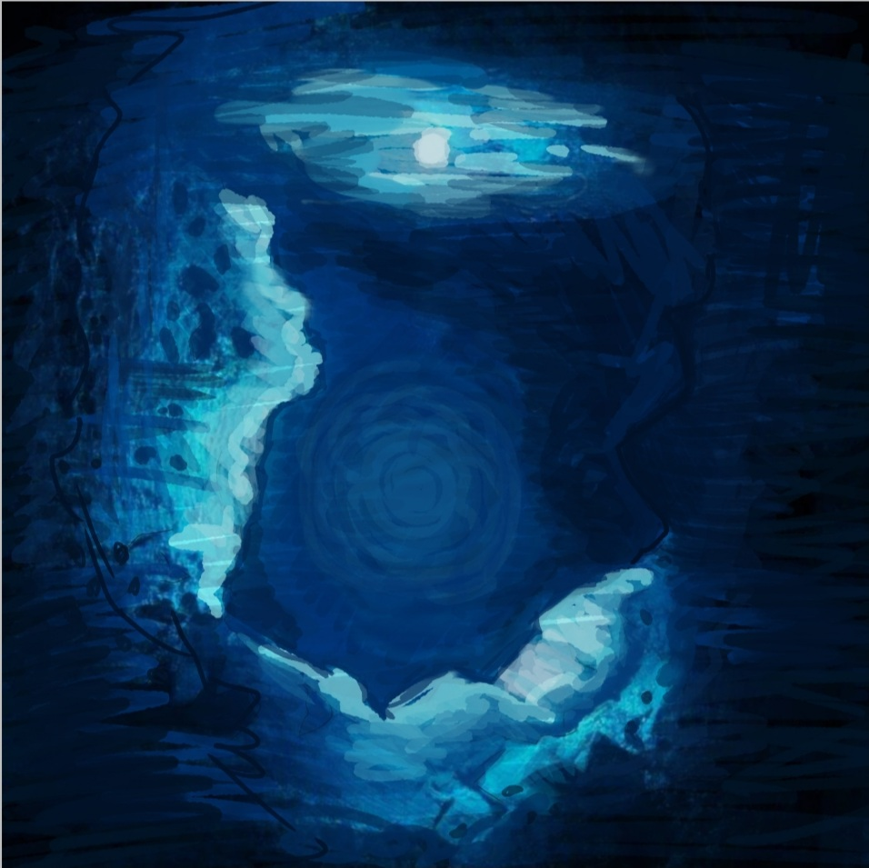

As Brooklyn waded through the knee deep waters of the dark cavern, every splash echoed. The cratered walls around her seemed to get smaller and smaller, and she started to lose hope. 'Maybe I'm wrong. Maybe this is a dead end.' Her breathing started to slow and she dropped the torch into the water. Her only light. Her gasp echoed, mocking her. She looked down into the now moving waters and saw something she didn't expect. A tunnel. By fluke, the torch illuminated an underwater pathway to something else. She didn't know what, but she had to take a chance. Brooklyn took a deep breath and plunged herself into the cold water. She struggled to open her eyes, then grabbed the torch and resurfaced. |  |
As she opened her eyes again, and stood, weighed down by the waters; she noticed a light glow in the distance. The greys and blacks of the rocky cavern began to glow a bright, healthy green. Like phosphor fairies glowing in the dark, beckoning her further into the tunnel. What was she to do? There were only two ways out; mysterious as eachother. |